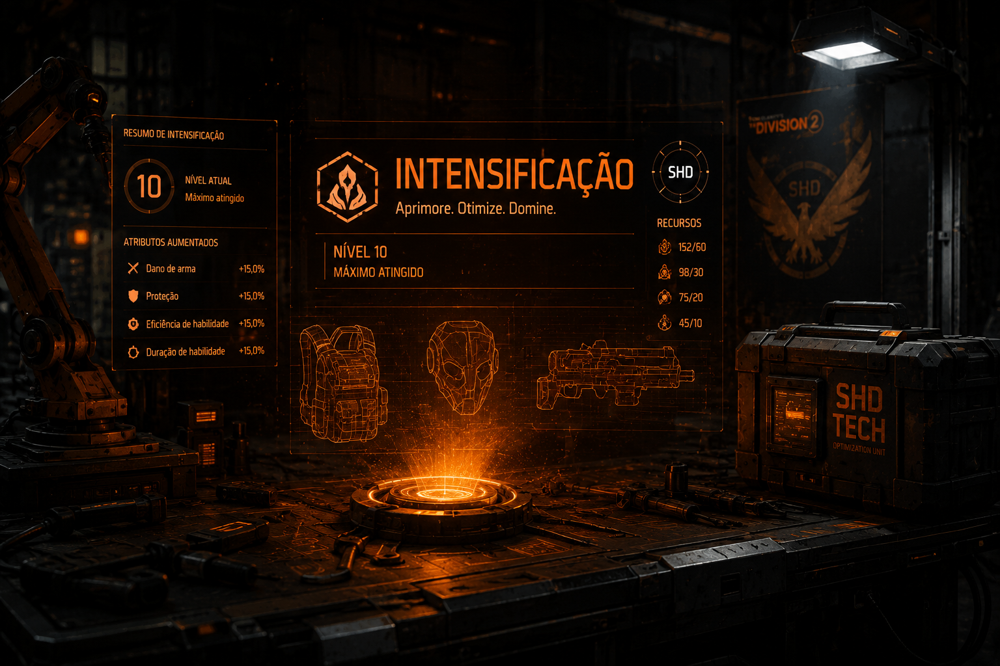

Progressão / Otimização
Progressão além da build base
A Intensificação deve ser entendida como um sistema de melhoria para quem já sabe quais armas, peças e builds quer usar. O foco não é montar a build do zero, mas aumentar a eficiência do conjunto certo.
Progressão
Builds
Farm
Endgame
Ver prioridades